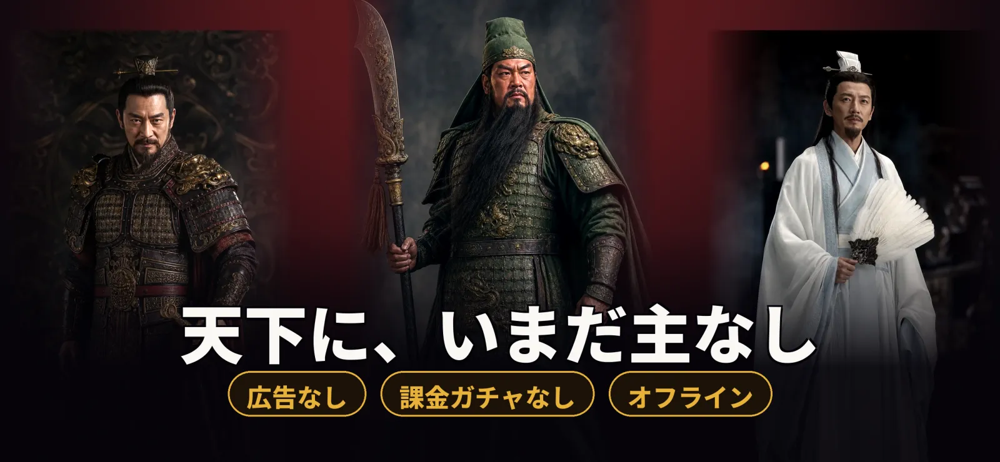
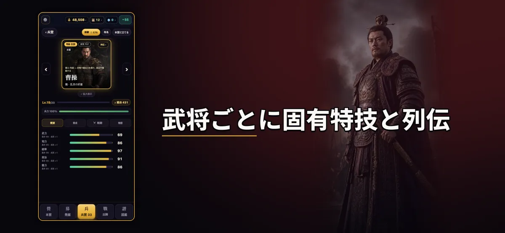
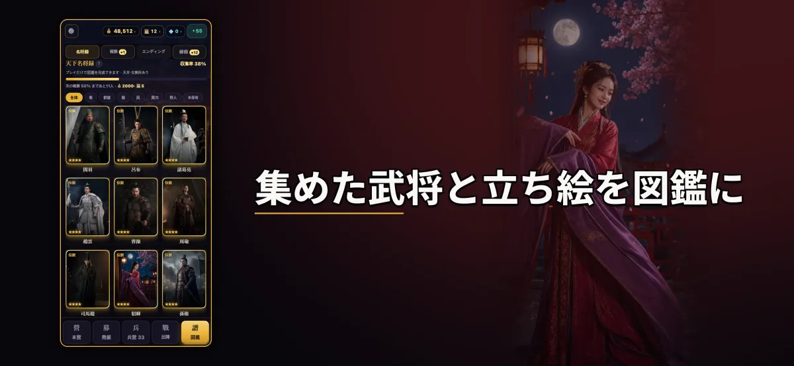
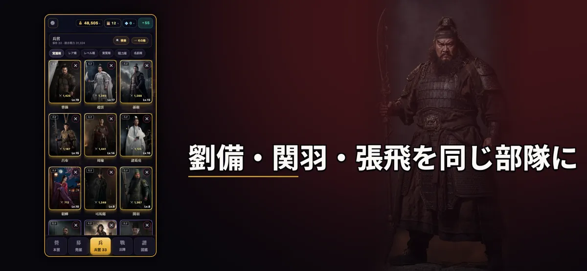
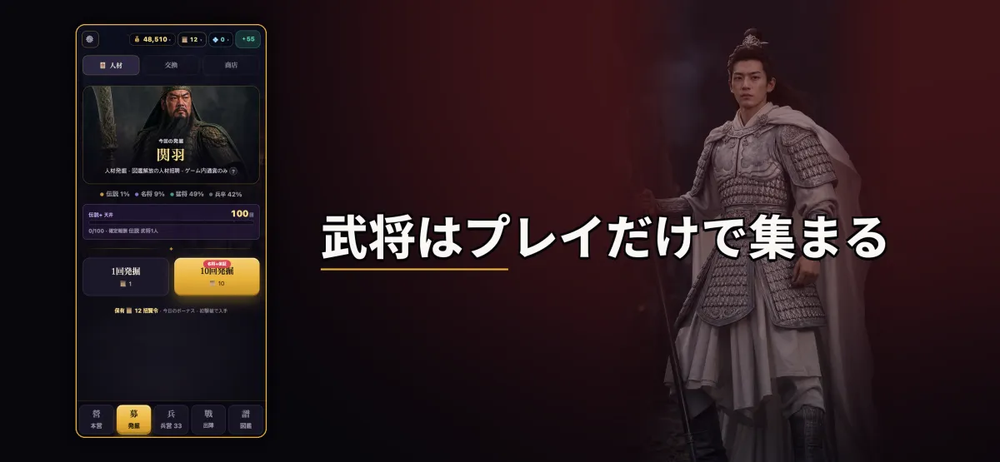
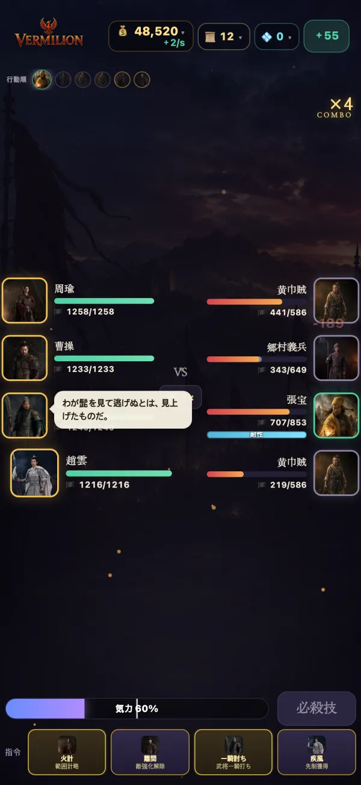
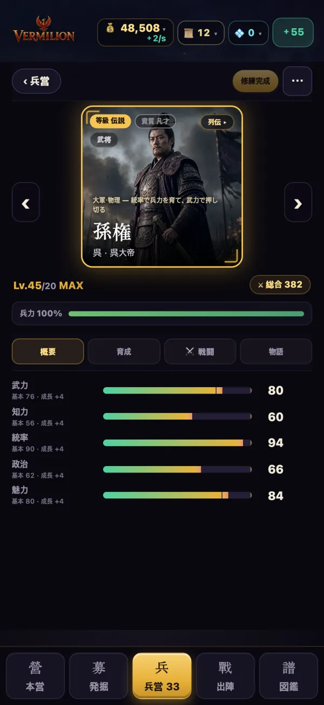
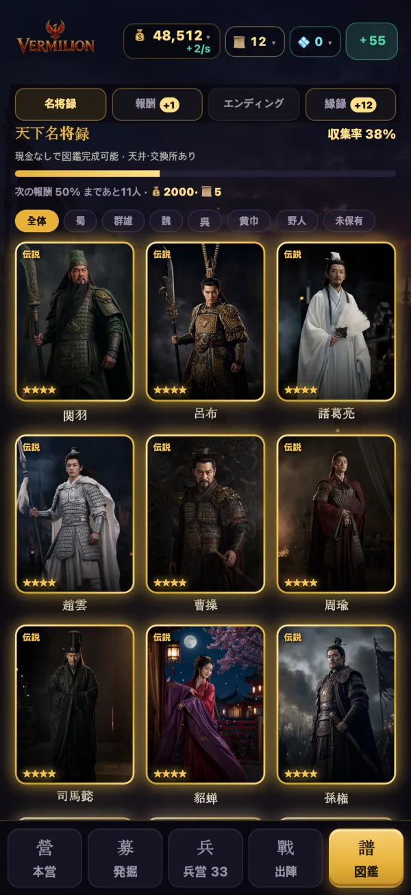

VERMILION 三国 名将
実写風の名将100人以上を集め、一騎当千で大軍を斬り拓く。
App StoreからダウンロードiPhone・iPad専用・無料ダウンロード
- 広告なし
- 課金ガチャなし
- オフライン

100人を超える名将を、実写風の肖像で
武将ごとに固有の特技と列伝があります。武将同士の絆を結ぶと、秘められた力が目覚めます。



一騎当千 — ひとりの武将で大軍を斬り拓く
武将ひとりを直接操作して敵陣を斬り進むアクションモード。1プレイ約2分30秒、全7戦場、難易度を段階で選べます。

図鑑と演武場
集めた武将と肖像は図鑑に記録されます。演武場では一騎討ちやクイズなどのミニゲームを楽しめます。

お約束
広告なし
プレイ中に広告は一切表示されません。
課金ガチャなし
武将の募集はプレイで得た資源だけで行います。現金で引く仕組みはありません。サブスクリプションもありません。
全武将をプレイで入手
育成を助ける任意のアイテムはありますが、すべての武将はプレイだけで入手できます。
完全オフライン
アカウントもサーバーも不要。セーブデータは端末内だけに保存されます。
まず遊んでから
無料ダウンロード。最初の12戦場（官渡まで）は無料で、一度の購入で本編キャンペーンが解放されます。
スクリーンショット





最新アップデート 1.0.3
- 一騎当千に新戦場「博望坡」— 夏侯惇と対決。
- レベルアップ時に上昇した能力値を表示。
概要
- 対応機種
- iPhone・iPad（iOS）
- 価格
- 無料ダウンロード・最初の12戦場は無料・一度の購入で本編を解放
- 言語
- 한국어・日本語・繁體中文・English
- 配信地域
- 韓国・日本・台湾・香港・マカオ・シンガポール・マレーシア